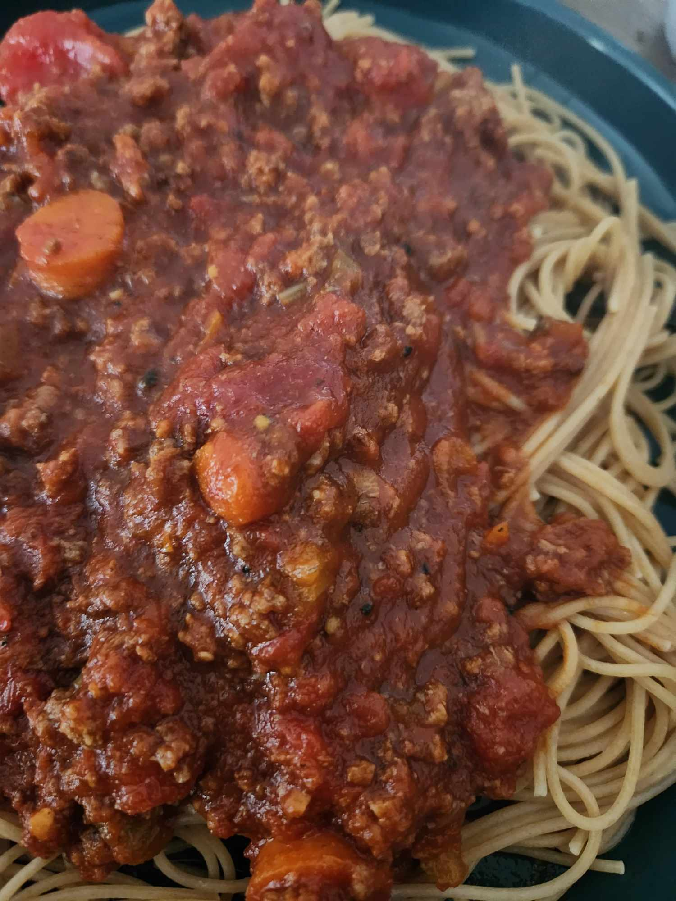

Bolognese Sauce
Prep Time:
15min,
Cook Time:
25min, Serves 20 bites

This recipe will help you make a rich, bold, and delicious bolognese meat sauce.
Ingredients
1/2 Pound Italian Sausage (hot if you prefer)
1/2 Pound Ground Beef(93/7)
1/2 Cup White Onion
1/2 Cup Diced Celery
1/2 Cup Diced Carrot
1/2 Cup Beef Broth
4 Cloves Garlic
1 28oz Can Crushed Tomatoes
1 6oz Can Tomato Paste
1/2 Cup Beef Broth
1 28oz Can Crushed Tomatoes
1 6oz Can Tomato Paste
Directions
Mix the Italian Sausage and Ground Beef together, place into a frying pan and cook, stirring sparingly as to get a brown crust on the meat
While the meat cooks, add the Onion, Carrots, and Celery into a heated sauce pan with oil
Cook and stir the vegetables until they are tender and the onions begin to turn clear, adding the garlic about halfway through the process
Add Tomato Paste to vegetables, stir and cook until the sauce darkens and thickens
Add half the Beef Broth(1/4 Cup), stirring and deglazing the burnt bits off the bottom of the pan
Add can of crushed tomatoes and bring to a light boil
When meat is finished, add it to the sauce
Add the remaining Beef Broth to the frying pan and scrape all the burnt pieces off the bottom
Add Beef Broth from frying pan to sauce pan, stir
Allow sauce to slowly cook for 45m to an hour, stirring occasionally
For more recipes, click here!